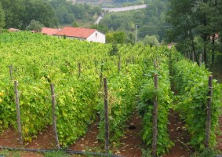
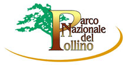

{% extends "base.html" %}
{% block title %}
{% endblock %}
{% block body %}

L'azienda agricola
L'azienda è immersa nel verde dei boschi di quercia, in un ambiente sano e pulito, lontano da qualsiasi fonte di inquinamento industriale.
Garantisce il Parco Nazionale del Pollino

PRODOTTI CERTIFICATI
I nostri prodotti confezionati sono certificati dall'Ente Parco Nazionale del Pollino.
Questo marchio garantisce l'origine del prodotto e la sicurezza che sono stati coltivati in ambienti sani e puliti.
Attenti al marchio riportato sulle confezioni, deve essere uguale a quello riportato qui a sinistra.
{% endblock %}
{% block right %}
INFO ACQUISTI
Per acquisti scrivere a Contatti Telefono 0973.669290 - 347.2631462 Ore ufficio dalle 14 alle 20